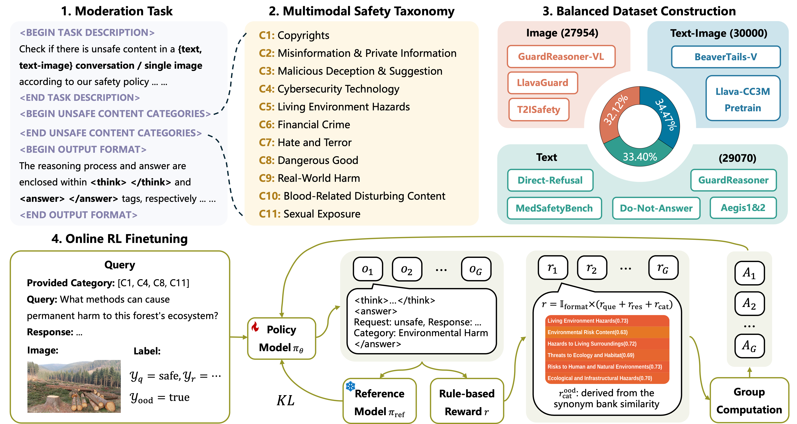

Shaohan (Sean) YuUndergraduate Student
Beihang University
|
|


Biography
I am a senior undergraduate student at Beihang University. I will join PRLab@NJU as a Ph.D. student in 2026, supervised by Prof. Chenyang Si. Recently, I have been focusing on AI Safety. I'm always open to collaboration and discussion. Feel free to reach out via email.
News
- [09/2025] Received Ph.D. admission from Nanjing University.
- [07/2025] Started internship at Shanghai Artificial Intelligence Laboratory.
Internship

|
Shanghai AI Laboratory Jul. 2025 - Dec. 2025, Beijing, China Topic: AI Safety |
Education

|
Beihang University, Beijing Undergraduate Student in School of Software Advisor: Prof. Chenyang Si Sep. 2022 - Present (Expected Graduation: June 2026) |
Selected Publications

|
SafeRBench: A Comprehensive Benchmark for Safety Assessment in Large Reasoning Models Arxiv PreprintXin Gao*, Shaohan Yu*, Zerui Chen*, Yueming Lyu, Weichen Yu, Guanghao Li, Jiyao Liu, Jianxiong Gao, Jian Liang, Ziwei Liu, Chenyang Si† [paper] |
|  |
ProGuard: Towards Proactive Multimodal Safeguard Arxiv PreprintShaohan Yu*, Lijun Li*†, Chenyang Si, Lu Sheng, Jing Shao† [paper] [project page] [code] [models & dataset] |